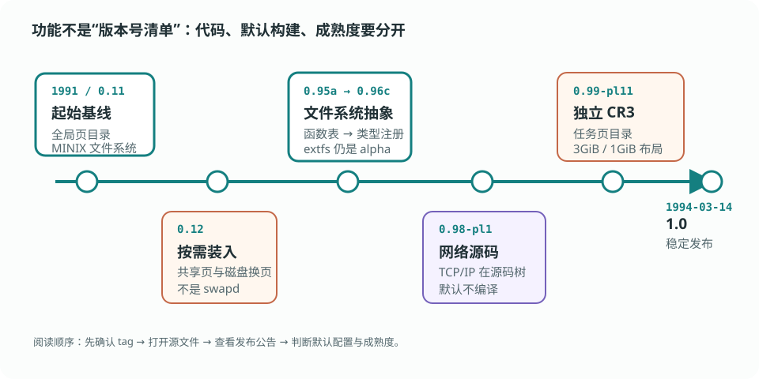
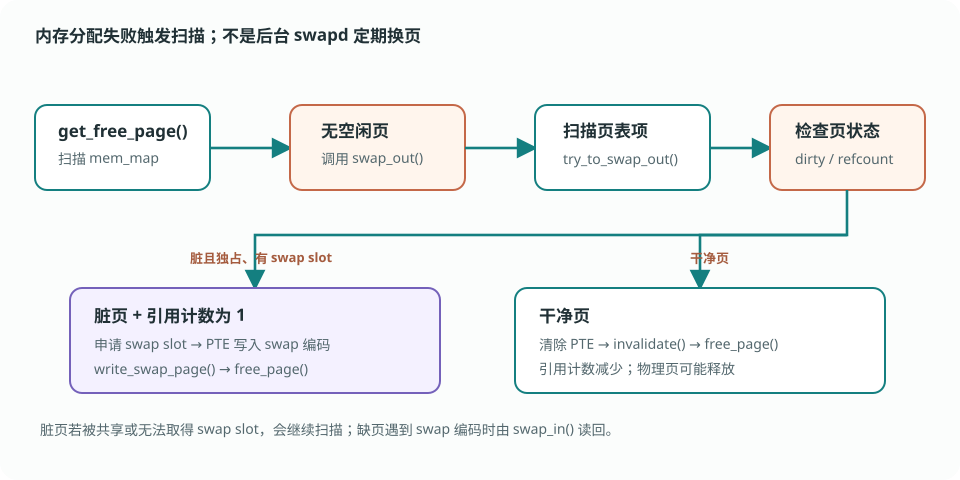
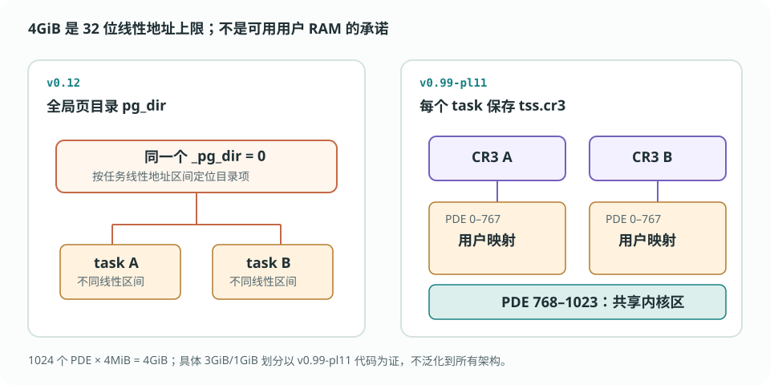

从 Linux 0.11 到 1.0：架构演进与版本证据
1991 年的 Linux 0.11 不是现代内核的缩小版。要理解它如何成长，必须把每项能力放回具体 tag、发布说明和源码结构中：按需装入与换页、文件系统注册、可选网络栈，以及独立页目录。
v0.12 · v0.96c · v0.98 · v0.99.x · v1.0先把版本和证据放回时间轴
版本号不是一张可以随意填充功能的清单。早期 Linux 的开发速度很快，同一功能可能先进入开发树、再经过 patchlevel、最后才成为稳定发布的一部分。因此，本章将“某个 tag 中已经能找到代码”“发布说明声称已包含”和“功能已经适合真实使用”分开记录。

最重要的阅读习惯是先选定版本，再打开文件。比如，不能用 0.99 的 task_struct.tss.cr3 反推 0.11 已经有每任务独立页目录，也不能把 0.98 的 TCP/IP 目录写成 0.98 默认构建出的内核能力。
0.12：换页不是一个 swapd 守护进程
0.12 的 mm/memory.c 注释把几个时间点写得很清楚：按需装入从 1991-12-01 开始，共享页从 12-02 开始，真正的磁盘换页从 12-18 开始。它们是源码中的开发记录，不应混成“某天发布了一个后台 swapd”。
实际控制流在 mm/swap.c：get_free_page() 先扫描 mem_map 寻找空闲页；扫描失败时直接调用 swap_out()，若成功释放出页面就重新扫描。这里没有独立的 swapd 进程负责周期性换页。
if (!__res && swap_out())
goto repeat;
return __res;swap_out() 使用静态目录/页表扫描游标寻找候选项。try_to_swap_out() 对脏页检查引用计数是否为 1、申请 swap slot、把页表项改为 swap 编码、写出页面并释放物理页；对干净页则可直接清除映射并释放页面。这个实现不是教科书式的“第二次机会算法”：源码没有按访问位构造完整的 CLOCK/second-chance 环。

边界：0.12 的 _pg_dir = 0 仍体现共享的线性页目录布局；不要把后期 0.99.x 的每任务 CR3 结构倒灌到这个版本。
0.95a → 0.96c：文件系统抽象逐步成形
把 VFS 说成“0.95 一次性引入完整现代接口”过于粗糙。0.95a 的 include/linux/fs.h 已经定义 file_operations 和 inode_operations，这代表文件对象与 inode 操作开始通过函数表分派；但该版本头文件还没有后来那套 file_system_type 文件系统注册结构，也没有 0.96c 中可见的文件系统注册表。
到 0.96c，fs/super.c 已经出现 file_systems[]，把 minix_read_super 和 ext_read_super 注册为文件系统类型，并由 get_fs_type() 按名称查找。这才是本章适合用来说明“多文件系统挂载入口开始抽象化”的源码锚点。它仍然是早期实现，不应等同于现代 VFS 的完整对象模型。
0.96c 的发布公告明确称 extended filesystem 是 alpha：当时可以挂载并使用长文件名和大于 64MB 的分区，但 mkefs 工具尚未发布，仍缺少配套检查工具。因此这里不再写未经版本化证据支持的“最大 2GB”数字，也不把 extfs 直接叫作 ext2。
| 版本证据 | 源码能证明什么 | 不能夸大成什么 |
|---|---|---|
0.95a include/linux/fs.h | file_operations、inode_operations 函数表 | 不是已经具备后来全部 VFS 注册与对象接口 |
0.96c fs/super.c | file_systems[]、get_fs_type()、minix/ext 的 superblock 装载入口 | extfs 仍处于 alpha 测试状态 |
| 0.98-pl1 README | extfs、dosfs、proc-fs 代码在源码树中，但都仍在测试 | 不能据此说这些文件系统已适合生产使用 |
0.98：网络代码进入源码树，但不是默认内核
0.98 的 README 是非常关键的版本证据：TCP/IP 代码从该版本起存在于标准源码树，但没有编译进默认内核二进制。要启用它，维护者需要调整 net/Makefile 的 SUBDIRS、SOCK_FLAGS，并取消顶层链接规则中 TCP/IP 对象的注释；用户空间还需要配套协议头文件和网络程序。
这一区分会改变我们对“Linux 何时拥有网络栈”的叙述：0.98 是源码树已经包含初始 TCP/IP 实现的里程碑，不等于普通用户下载源码、直接 make 就得到一个默认联网内核。0.98 README 还说明 SCSI 驱动在源码中、可通过配置移除；extfs、MS-DOS 文件系统和 proc-fs 也处于测试阶段。
阅读发布说明的价值：它不仅告诉我们“有什么”，还告诉我们默认配置、编译开关、依赖文件以及维护者当时对成熟度的判断。
0.99.x：每个任务拥有自己的 CR3
32 位线性地址可以表示 2^32 个字节，即 4GiB；这是 x86 地址宽度给出的理论空间，不是“每个进程都能把 4GiB 当作用户内存使用”，更不是机器一定装有 4GiB RAM。
真正值得比较的是页目录的所有权。0.12 的 copy_page_tables(from,to,size) 直接根据线性地址计算全局 _pg_dir = 0 中的目录项。到 0.99-pl11，task_struct 的 TSS 中有 cr3；copy_page_tables() 为新任务分配页目录并复制目录项，free_page_tables() 则按该任务的 tss.cr3 回收。
0.99-pl11 的 clear_page_tables() 只清理目录项 0–767，并在页目录被共享时复制 768–1023 的高端项。按 1024 个 PDE、每项覆盖 4MiB 计算，目录总覆盖 4GiB；这个版本的代码布局把低端 3GiB 留给进程映射，把高端 1GiB 内核映射作为共享区域。这里的证据指向 0.99-pl11 这份晚期开发源码，不要把这个具体布局泛化成 Linux 所有版本、所有架构永远固定的规则。

1.0：稳定发布，而不是突然换代
Linux 1.0 的 tag 发布记录日期为 1994-03-14。Linus 的公告明确说，与 0.99-pl15 相比，这次发布没有新的重大功能，主要是大量 bug 修复；发布的意义是 Linux 退出 Beta 状态，成为发行版可以据此构建的稳定基线。
这也纠正了常见的“1.0 一夜之间加入了所有现代子系统”的叙事。虚拟内存、文件系统扩展、网络代码和设备支持是在 0.12 到 0.99 的连续开发中逐步出现、试验和修复的。1.0 是一个质量与发布状态的里程碑，不是架构从零开始重写的分界线。
把演进关系连成一条因果链
- 内存压力推动按需装入、共享页与磁盘换页；换页策略直接落在页表项和物理页引用计数上。
- 文件系统种类增加，推动从 inode/file 操作表走向文件系统类型注册与 superblock 装载分派。
- 网络实现先进入源码树，再通过构建规则和用户态协议程序启用；“代码存在”和“默认可用”必须分开。
- 任务地址空间从全局页目录中的不同线性区间，演进到 TSS 保存的每任务 CR3，并通过共享内核高端映射控制复制成本。
- 1.0 把这段快速演进后的系统收敛为一个相对稳定的发布基线。
源码核对练习
不要只背版本号。分别打开下列 tag 的文件，亲自确认“代码存在”“默认构建”和“功能成熟度”是三个不同问题。
- 在 v0.12 的
mm/swap.c搜索get_free_page，确认分配失败时如何调用swap_out()。 - 在 v0.95a 的
include/linux/fs.h搜索struct file_operations，再搜索file_system_type；对照 v0.96c 的fs/super.c中file_systems[]。 - 阅读 v0.98-pl1 的 README，找到 TCP/IP 的 Makefile 启用步骤，以及 extfs/proc-fs 的成熟度声明。
- 在 v0.99-pl11 的
mm/memory.c搜索tsk->tss.cr3，检查目录项 768–1023 的处理。
自测：为什么“0.95 引入完整 VFS”是不准确的？
0.95a 已有 file_operations 和 inode_operations，但 0.96c 的 fs/super.c 才能直接看到 file_systems[] 注册表和 get_fs_type()。更稳妥的表述是：文件操作函数表先出现，文件系统类型注册与 superblock 装载分派在后续版本中逐步形成。
自测：0.98 的 TCP/IP 为什么不能写成“默认启用”？
0.98-pl1 README 明确说明网络代码虽已在标准源码树中，但没有编译进 normal binary；需要调整 net/Makefile 和顶层链接规则，并准备用户态协议程序。
原始发布记录与源码
- Linux v0.12 · mm/memory.c：需求装入、共享页与早期 VM 的源码注释；mm/swap.c：swap_out、try_to_swap_out、swap_in 与 get_free_page 的调用关系。
- Linux v0.95a · include/linux/fs.h：file_operations 与 inode_operations；用于证明早期函数表已经存在。
- Linux v0.96c · fs/super.c：file_systems[]、get_fs_type() 与 minix/ext 注册；0.96c 发布公告：extfs 的 alpha 状态和当时已验证的功能范围。
- Linux v0.98-pl1 · README：TCP/IP 未默认编译、SCSI 与文件系统测试状态。
- Linux v0.99-pl11 · mm/memory.c：task TSS 的 CR3、页目录复制/回收及 768–1023 高端项处理。
- Linux v1.0 发布 tag：1994-03-14 发布记录与“相对 pl15 以 bug fixes 为主”的公告。
下一章把这些历史机制映射到现代内核：保留“要解决的问题”，但不假定数据结构、调度算法或驱动接口原封不动地延续下来。